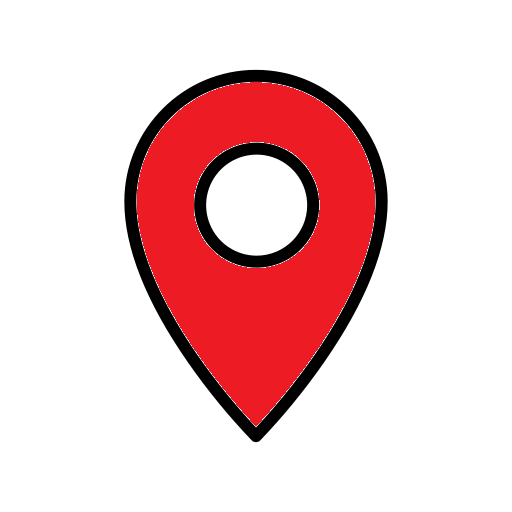
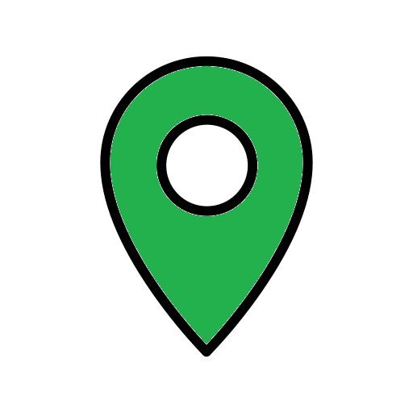
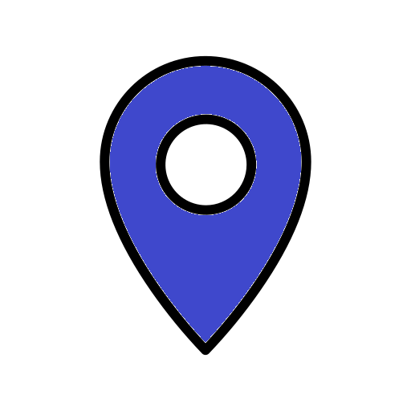
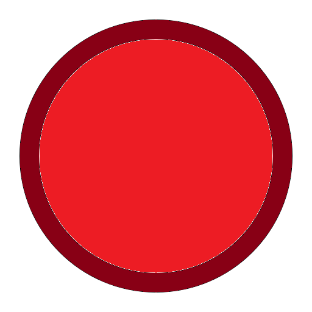

Le Guide Ultime des Avantages Étudiants : Découvrez Comment Tirer le Meilleur Parti de Votre Statut!
Le statut d’étudiant offre plein d’opportunités d’activités ou d’économies, les connaissez-vous toutes ?
Par Clément Marie, Gabriel Rouge, Maxime Tamarin
Peu connaissent tous les avantages dont ils ont droit ; cet article relate tout ce qu’il nous faut savoir pour vivre comme un étudiant épanoui, qu’importe la taille de votre porte-monnaie. Le statut d’étudiant s’accompagne de nombreux avantages qui nous aident autant dans la vie quotidienne que dans le divertissement. Tantôt, les sociétés proposent des avantages aux étudiants, tantôt l’université a des partenariats avec les entreprises locales, tantôt l’université nous propose des services qui nous sont propres. Découvrez dans cet article une carte montrant tous les points d’intérêts dans la zone autour de votre établissement, puis une explication détaillée de tout ce que votre statut vous octroie ; réductions, gratuités, et tous les autres avantages. Après cette lecture, vous aurez appris tout ce qu’il vous manque pour saisir toutes les opportunités d’un étudiant à Aix-Marseille Université.
Réduire au maximum ses dépenses dans la vie quotidienne
La vie quotidienne estudiantine s’accompagne pour beaucoup de défis financiers. Or, nous avons la chance d’avoir dans notre université un nombre important d’avantages qui rendent la vie plus facile. Voici tout ce qu’il y a à savoir pour dégoter toutes les ristournes possibles, ainsi que plusieurs astuces d’étudiants.
Se restaurer
Legend
 Lieux important  Iut  Restaurant et Cafétéria  Cite et résidence universitaireCrous & Go'
Crous & Go' vous permettra de commander votre repas en ligne et de le récupérer dans les restaurants universitaires. Pour cela rendez-vous sur https://crousngo.crous-aix-marseille.fr pour commander votre repas.
Il y a quatre restaurants universitaires différents autour de notre IUT, et chacun propose des menus différents. L’un propose des plateaux complets équilibrés, un autre permet de composer son burger ou sa salade dans un salad-bar, un autre propose différentes pâtes en sauce, et un dernier avec une grande carte de pizza ouvert le soir. Il y a également deux cafétérias, qui sont similaires. Pensez à passer régulièrement dans les cafétérias pour consulter les nouveautés saisonnières ! Il est possible de bénéficier d’une réduction pour, par exemple, ne payer que 1€ au lieu de 3.30€ pour un plateau au restaurant universitaire, ou payer moins cher les formules à la cafétéria. Tous les étudiants peuvent avoir cette réduction ; soit vous êtes boursier, alors vous l’avez par défaut, soit il faut en faire la demande. En effet, les étudiants en difficulté financière peuvent, en le justifiant, faire une demande par mail afin de bénéficier aussi de ces délicieuses réductions. Il est intéressant d’évoquer aussi les points de fidélité qui nous permettent d’obtenir par exemple, une boisson gratuite. Pour obtenir ces points, il suffit de payer avec l’application Izly (play store : https://play.google.com/store/apps/details?id=fr.smoney.android.izly.REC&hl=en_US , apple store : https://apps.apple.com/fr/app/izly/id956519643 ). Voici comment obtenir des points de fidélité:
| Articles | Gains |
|---|---|
| Canette | 10 pts |
| Boisson chaude | 10 pts |
| Crêpe pts | 10 pts |
| Gauffre pts | 10 pts |
| Cake pts | 10 pts |
| Muffin | 10 pts |
| Barre chocolatée | 10 pts |
| Sandwich traditionnel | 15 pts |
| Petit boisson (50cl) | 15 pts |
| Sandwich gourmand | 25 pts |
| Panini | 25 pts |
| Sandwich saveur | 30 pts |
| Plat du jour | 30 pts |
| Récompense | Coût |
|---|---|
| Sac en papier | 14 pts |
| Kit de couverts en bois | 16 pts |
| Sac réutilisable CROUS | 50 pts |
| Boisson chaude | 80 pts |
| Eau de source | 80 pts |
| Croissant | 80 pts |
| Pain au chocolat | 80 pts |
| Canette | 120 pts |
| Barre chocolatée | 120 pts |
| Crêpe | 120 pts |
| Gauffre | 120 pts |
| Cake | 120 pts |
| Muffin | 120 pts |
| Petite boisson (50cl) | 180 pts |
| Sandwich traditionnel | 200 pts |
| Sandwich gourmand | 300 pts |
| Sandwich saveur | 350 pts |
| Plat du jour | 400 pts |
| Mug CROUS | 780 pts |
| Couvertes Georgette | 800 pts |
| Gourde CROUS | 1000 pts |
Se loger
Les étudiants d’AMU peuvent demander un logement CROUS à bas prix. Les boursiers seront privilégiés, mais tout le monde peut en bénéficier ! Rendez-vous sur https://trouverunlogement.lescrous.fr pour plus d’informations concernant les logements CROUS.
Besoin d’aide pour payer ?
Pour vous aider à payer le loyer ou la caution de votre logement étudiant, il existe différentes aides financières. Tous ces dispositifs sont néanmoins soumis à condition. En voici quelques uns qui seront intéressants à consulter.
Vous pouvez bénéficier des aides de :